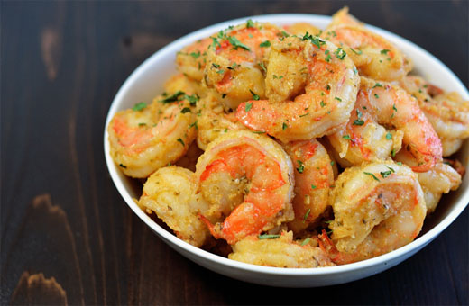

Best Filipino Recipe

Chili Garlic Butter Shrimp
Prep time
10 mins
Cook time
15 mins
Total time
25 mins
SERVES: 4
Ingredients
2 lbs. medium to large shrimp, cleaned.
5 pieces red Thai chili pepper, minced.
½ cup chopped scallions.
8 cloves garlic, crushed and chopped.
2 tablespoons cooking oil.
3 tablespoons butter.
½ teaspoon salt.
¼ teaspoon ground black pepper.
Instructions:
Place the shrimp in a plate. Rub salt and ground black pepper all over. Let it stay for 10 minutes.
Melt butter in a pan. Add the cooking oil. Once the mixture gets hot, add the garlic and then cook in medium heat until light brown.
Put the chili into the pan. Stir and continue to cook for 30 seconds.
Add the shrimp. Stir-fry until it turns medium orange.
Stir-in the chopped scallions and continue to stir-fry for 1 minute.
Transfer to a serving plate.
Share and enjoy!